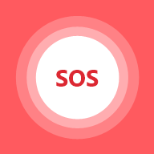

Inicio
Mantén presionado 1.5 segundos. Tu red recibe la alerta con tu ubicación y tus contactos de emergencia un SMS con el mapa.
Tienes 5 segundos para cancelar.
📞 Llamar al 911
Seguridad
Mi red
Mapa
Chat
Actividad
Mi red y ajustes
Integrantes de la red
Agrega a quien quieras, sin importar su plan o compañía: le enviamos un código por SMS y, al verificar su número, entra a tu red. Toca una foto para cambiarla por una real.
Lugares
Recibe un aviso cuando lleguen o salgan. Elige a quién escuchar en cada lugar.
Contactos de emergencia
Reciben un SMS con tu ubicación cuando activas SOS, aunque no tengan la app.
Avisos
Privacidad
Tu ubicación solo la ve tu red familiar. No la vendemos ni mostramos anuncios.
Se borran tus lugares, contactos, chat e historial de esta app. Tu línea y tu plan no cambian.
Compartir ubicación
Cualquiera con el enlace te ve en el mapa hasta que se acabe el tiempo. No necesita la app ni cuenta.
El enlace deja de funcionar solo al terminar el tiempo o cuando llegas.
Acompáñame
Tu red sigue tu trayecto en vivo y recibe una alerta si no llegas a tiempo o si tu teléfono se queda sin señal.
Geocercas
Dibuja una zona alrededor de un lugar, por ejemplo el colegio, elige el horario y a quién vigilas: cualquier integrante de tu Plan Familia o de tu red SOS, por su SIM Navi (en su celular o en su reloj inteligente). Si sale de la zona dentro del horario, tu red recibe una alarma como la de SOS.
¿A quién puedes vigilar?
A cualquier línea de tu Plan Familia o persona inscrita en tu red SOS Family. Se vigila su SIM Navi: si va en un reloj inteligente, funciona con los datos del reloj aunque no lleve celular. Marca en qué va cada SIM.
NAVI SOS Family viene con los planes de 12 GB, 24 GB o el Plan Familia
Ubicación en tiempo real, lugares, botón SOS y manejo seguro para toda tu familia.
Ver Plan Familia